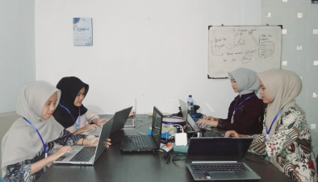
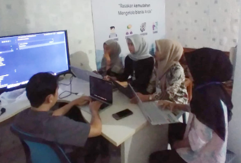

Access Media
Rangkaian Kegiatan Selama Praktik Kerja Lapangan (PKL) 2025 – 2026

Presentasi Profil Perusahaan
Menyusun materi profil perusahaan Access Media.
Mempresentasikan profil perusahaan di hadapan pembimbing.
Melatih kemampuan komunikasi dan kepercayaan diri.
Penyusunan Panduan
Membantu penyusunan panduan dokumentasi menggunakan Docusaurus.
Menyusun konten panduan agar mudah dipahami oleh pengguna.
Melatih kerapian penulisan dan penyusunan informasi.

← Kembali